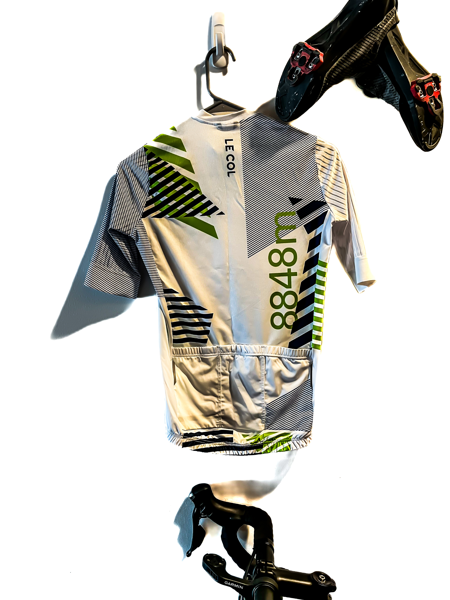

About
I have joined Microsoft Azure Networking!I have recently graduated from UCSD, where I was advised by Prof. Alex Snoeren. My research is focused on virtualizing RMT-based programmable switches and enabling runtime programmability on such devices. I have built systems that enable application offloads and generic network functions within a programmable network using techniques such as active networking. My interests are in the area of systems and networking.
While at UCSD, I have also worked on datacenter fault detection [4] and the RotorNet project [3]. Prior to joining UCSD, I was a part of the PinDrop project at Microsoft Research India where I worked on improving quality of service of real-time streaming applications [5,6]. During my Masters program at IIT Kanpur, I worked on building a tutoring system for introductory programming courses [thesis].
Selected Publications
2023
Memory Management in ActiveRMT: Towards Runtime-programmable Switches
Rajdeep Das and Alex C. Snoeren. In Proceedings of the 2023 ACM SIGCOMM Conference (SIGCOMM '23). [Paper]

Best Paper Award
2020
Enabling Active Networking on RMT Hardware
Rajdeep Das and Alex C. Snoeren. In Proceedings of the 19th ACM Workshop on Hot Topics in Networks (HotNets '20). [Paper]
2020
Expanding across time to deliver bandwidth efficiency and low latency
William M. Mellette, Rajdeep Das, Yibo Guo, Rob McGuinness, Alex C. Snoeren, and George Porter. In 17th USENIX Symposium on Networked Systems Design and Implementation (NSDI 20) (pp. 1–18). USENIX Association. [Paper]
2019
Understanding the Limits of Passive Realtime Datacenter Fault Detection and Localization
A. Roy, R. Das, H. Zeng, J. Bagga and A. C. Snoeren, "Understanding the Limits of Passive Realtime Datacenter Fault Detection and Localization," in IEEE/ACM Transactions on Networking, vol. 27, no. 5, pp. 2001-2014, Oct. 2019. [Paper]
2017
Informed Bandwidth Adaptation in Wi-Fi Networks using Ping-Pair
Rajdeep Das, Nimantha Baranasuriya, Venkata N. Padmanabhan, Christoffer Rödbro, and Seth Gilbert. 2017. Informed Bandwidth Adaptation in Wi-Fi Networks using Ping-Pair. In Proceedings of the 13th International Conference on emerging Networking EXperiments and Technologies (CoNEXT '17). [Paper]
2016
Via: Improving Internet Telephony Call Quality Using Predictive Relay Selection
Junchen Jiang, Rajdeep Das, Ganesh Ananthanarayanan, Philip A. Chou, Venkata Padmanabhan, Vyas Sekar, Esbjorn Dominique, Marcin Goliszewski, Dalibor Kukoleca, Renat Vafin, and Hui Zhang. 2016. Via: Improving Internet Telephony Call Quality Using Predictive Relay Selection. In Proceedings of the 2016 ACM SIGCOMM Conference (SIGCOMM '16). [Paper]
(Other Activities)

Road Cycling . Hiking . Rock Climbing . Mountain Biking